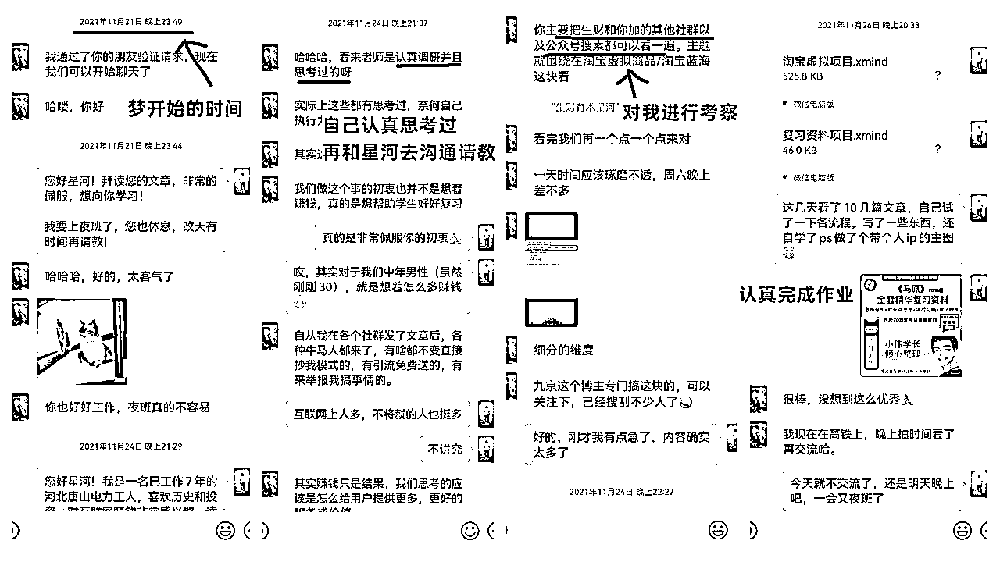
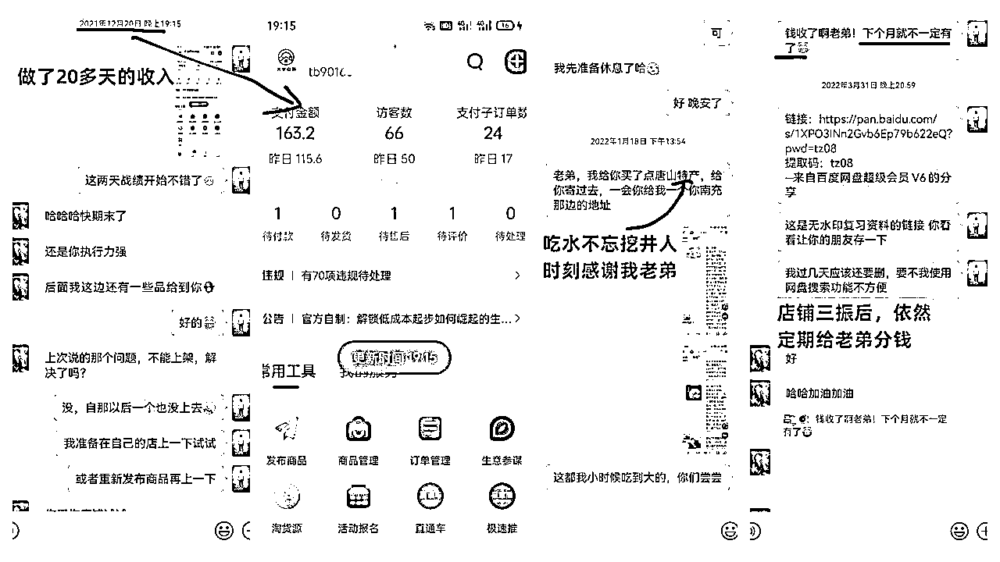
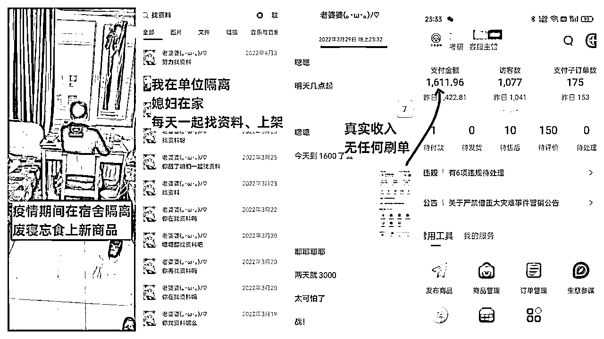
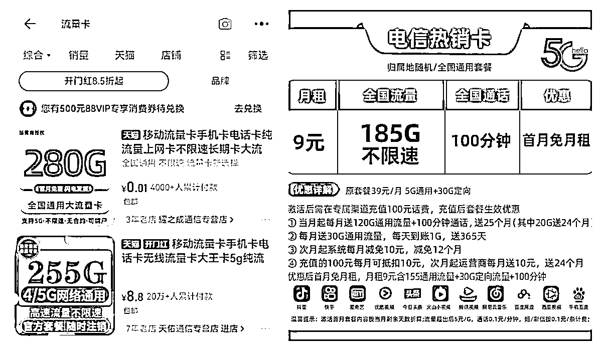
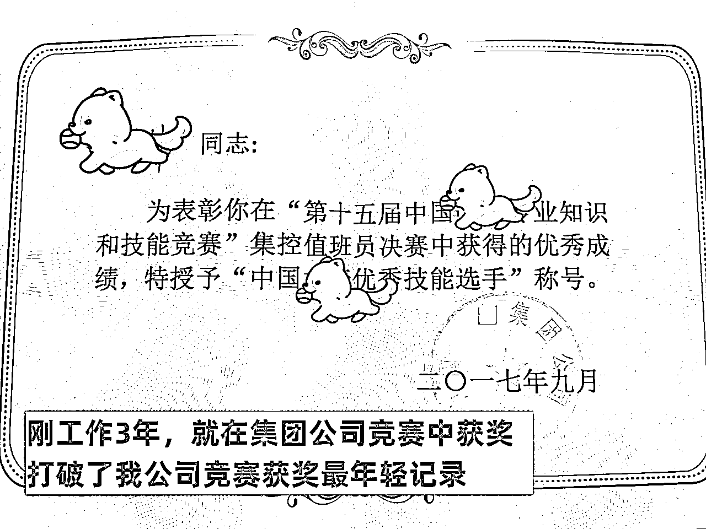
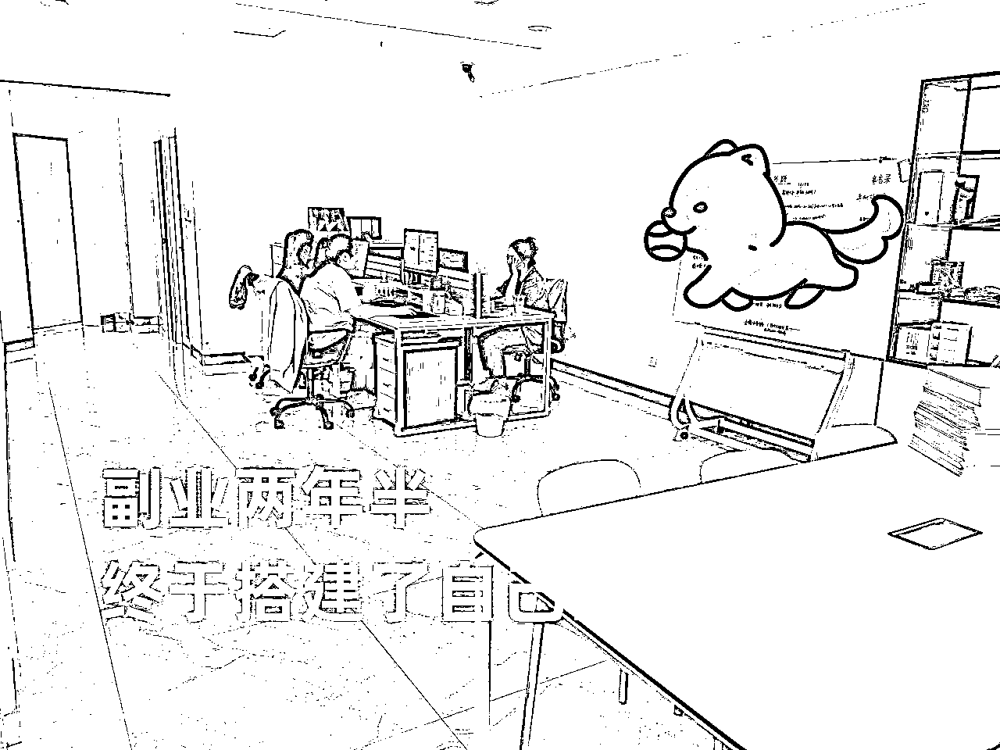

来源：https://ogsvnukdtf.feishu.cn/docx/V6P2dYlkoo2hvKxaT82c4qtFnBc
大家好，我是江天，这个网名取自毛主席的诗词“寥廓江天万里霜”，想让激励自己不畏困难，拥有豁达的心态。
我来自河北唐山，92年，主业是央企火电厂集控值班员，如今已经练习副业整两年半，从日入100+，到年入30w+，到现在开了自己的公司，月平均入10w，也就是年100w+。
很感谢路上遇到的几位生财圈友对我的帮助，很感谢生财有术这个平台让我结识如此靠谱的朋友，里面有如此多开卷有益的信息。
下面把我这两年半，从副业小白到公司老板的经历和感悟给大家分享，也给自己做个记录。若能让给看到我文章的朋友引起共鸣甚至有所启发，实乃幸事。
自己从14年大学毕业开始就关注网赚，兜兜转转百度网盘存了一大堆盗版网课，自己没头脑的尝试过拍视频薅流量的钱、在微信群卖食品，炒过股，也拍了几十个财经自媒体视频，但是最终没有任何落地成果。
当时我理解的赚钱=网赚，一直认为生财是网赚圈的天花板，所以一直花钱买“共享版”生财看。21年11月，在看生财帖子时，感觉淘宝虚拟这个项目很靠谱，同时正好有个圈友@星河 留了联系方式，并且做的是大学生期末复习资料，觉得自己对大学期末资料感兴趣，果断联系上他。当时他的路径是知乎引流到微信公众号再付费进入qq群，由于工作很忙，他的淘宝店没有时间经营。我当时就感觉把他公众号的资料，都放到淘宝去卖非常可行，就主动联系并说明了这一想法。
他觉得我认真思考过，有那么一点点靠谱，就也对我进行了考验，让我把生财里面的关于淘宝虚拟的帖子都看了，做个思维导图，3天后再进行交流。当时星河由于写精华帖已经获得了两颗龙珠了，对于我来说绝对是大佬了。于是乎我认真钻研了淘宝虚拟的帖子，做了思维导图。

等3天后再交流的时候，星河对我的作业满意也带着点诧异。因为他本想把这个项目交给朋友去打理，但是他朋友只是看到赚钱，在微信上答应了一句想做，就没下文了。而他看到我实实在在的执行了。于是他把自己那时的淘宝店交给我，让我自己去做，并不定期给提供指导，同时口头约定，给他10%的利润就可以。
从这一刻起，因为星河的热心肠，乐于助人，我踏上了副业的第一步！现在想两年半之前的场景，还记忆犹新。
我认为生财还会有很多星河这样的人，但是对于小白来说要做什么？
第一，开卷有益，多阅读思考。哪怕光看盗版课，盗版资料，也会让自己慢慢的初步有了赚钱的想法和思维。当然，如果接触到的是生财思维课这样优秀的课程就更好了。
第二，看完某个心动帖子，就按照之中的细节去实操。看明白和下场做，是两个完全不一样的事情。
第三 ,主动去链接有成果的人，展示出自己的认真思考和诚意。
由于星河本人乐于助人，让我在什么都没有付出的情况下，就获得了多次的指导。而且分佣也就是口头说说，利润也都是我自己去算，他在决定帮助我的时候，对于之后分钱根本没在乎过，全靠我自觉。
但并不是所有圈友都有时间，都会像我和星河这样投缘。所以作为小白，第一要主动，展现自己的认真思考；第二要有诚意，该付费付费，问问题前一定要发红包。（我第一次加他时当然也发了红包(*^_^*)）
2021年底，淘宝还很少有卖大学期末资料的，很多资料我做完主图上传上去都是独一份。所以当时我开店后，没有任何补单，就持续出单。记得做了20多天后，连续2天，店铺收入都有100多块钱。于是晚上和媳妇出去吃饭，平时都是点2个菜，那天感觉自己不一样了，从此又多了一份收入了，带着成就感和庆祝的心情，直接多点了个新出的菜！

流程跑通了，就该放大了。当时每天早上6点起来就做主图，整理上架资料，做完后还要去主业上班，但是看到了正向反馈，乐此不疲。
放大这块要着重说。当时星河给我了100多门资料，我上架了20门后就发现上的越多越赚钱，于是乎把星河给我的资料全上架后，又开始跟我媳妇一起，整理、伪原创各种科目的资料。记得巅峰时候好像上到了300多门！最终在22年3月份，店铺营业额每天过千，最高日收入1600+，当时觉得人生真是起飞了。
22年3月唐山市疫情封城，我公司作为供电供热的企业，生产部门的员工都在厂内隔离。隔离前我特意从家把笔记本带了出来，在单位隔离期间也是废寝忘食的整理资料，上架资料。当时觉得这个场景非常有意义，就让同宿舍的帮我拍照留念。

当时自己的经验、思维都还不够用，竟然天真的想着把这一家店经营好，打造百年老店，让他去吃淘宝一半以上的流量，没想着多开店。后来经历了售假打击，店铺关门后，也走上了店群的路子，最多的时候，同时经营10多家淘宝店。
随着我在淘宝做起来，同行也逐渐涌入。
加上由于淘宝会不定期判定虚拟资料是售假，而3次售假就永久关店了，导致店铺卖卖停停，而停止后店铺的流量需要很长一段时间才能恢复；
再加上后期开店补单等运营成本，最终粗略估算，每年纯利润30w+。
同时由于做的不错，星河又介绍我在北京做大学生教育的另外一位朋友@stone，当时他主做大学期末指导和考研调剂两方面，让我在淘宝帮助他引流。最终帮他成交了一单，我也收获了6k佣金，并且从此我们也成了好朋友。
在22年4月，我也终于正式付费加入了生财有术！算上未付费，但是已经跟生财圈友已开始接触时间段，到现在加入生财两年半的时间。加入生财后真心是感悟到了优质的信息获取渠道和圈子的重要性。一年2000左右的会费太值了。
总结一下这个淘宝虚拟项目做成功的原因
1.基础是产品太蓝海了。不用运营就能出单的产品，想不赚钱都难。而且一本万利、甚至0成本。所以建议新手做电商：从蓝海产品开始做，从虚拟产品，这样边际成本为0产品开始做。
2.执行力，对项目进行了放大。基于大量阅读生财帖子积攒的思维，知道流程后，就一定要及时放大。当时每天都努力的去整理资料，上架新资料，后来也让亲戚朋友帮着办执照开店。我刚做一两个月，星河就对我说，他认为在互联网上一个月赚一两万真的不难，只要是有执行力就够了。现在回头看，真的是这样。
当然我的经历不只有成功还有失败。后来认识的一个朋友做大学生教育，他做起了天猫电信卡并赚到了钱。
简单介绍一些号卡项目：产品是三大运营商的电话卡，就是相对线下营业厅的卡，资费更优惠，流量更大。货源是你上游的卡商一件代发，客户在天猫店下单留个人实名信息后，卖家通过卡商给开的专属链接，上传客户开卡信息，到月底按照开卡数量和单价，给卖家结算佣金。一张卡60到200元佣金不等。在淘系平台的话，需要开设天猫店并且需要资质，买店铺+资质几万到十几万不等。

其实我这个朋友也并不会淘宝运营，但是他做的“电信校园卡”资费很优惠，产品很蓝，每天购买人数很多，巅峰日2000＋的利润，我就动心也开始做。23年3月，我和媳妇合计后也投入了8w找天猫店买开始做。
当我23年4月买到天猫店后，“电信校园卡”这个品种停止在线上售卖了。因为卡套餐非常合适，本来是线下给大学生的福利，运营商发现有其他家在线上大规模售卖后就给停了。
之后就开始卖竞争比较红海的三大运营商的”流量卡“。还是用老一套上架补单，却发现流量少的可怜。之后自学开直通车并且也开了一段时间，依然没效果。
同时由于自己做的淘宝虚拟资料项目还是稳定盈利，并且也是只有我和媳妇两个人做，时间精力有限，没有对天猫流量卡这个项目投入太多精力，项目最终被放弃，天猫号卡店处于待出售状态。
总结失败原因：
1.开始把项目利润都压在了一个产品上，没有调研并且考虑到产品下架的风险。
2.自己的能力不足，也没有足够的精力去投入。
3.选择的产品没有很红，但也绝不够蓝海。
（前几天和朋友线下见了面，一起聊了聊总结出了以上原因(*^_^*)）
做大学生的学习资料的想做成精品，不可避免会涉及版权问题，我们也收到过出版社的起诉；而且随着做的人多了，出现了一批专门针对大学学科资料在淘宝上”收保护费“的群体。
这些群体不知道用什么方式，可以去举报你卖的学习资料。即使你卖的资料根本不侵权，但只要是科目标题和出版物名字沾边，就可以投诉售假成功。淘宝的规则是3次售假就强制关店，罚款8000元，所以无休止的跟这些”收保护费“群体斗争搞得我们也是精疲力竭，想找个能长期稳定耕作的下去的项目。之前做天猫电信卡也是如此。说实在的，长期思维也是受益生财里帖子。生财不止有项目的实操帖，也有宏观赚钱思维的帖子，让人不止知道如何赚钱，更知道如何长久的去赚。
而且我个人的性格，不论做任何事，一定要志存高远，绝不能混日子，或者小富既安。
我在自己的主业工作中，是我们单位的多个第一：
曾经第一年轻的主值班员、机组长，第一年轻在集团公司拿奖的职工，也在公司间的竞赛中拿过第一。

当我选择了副业，把主要精力放在副业上后，肯定不能每个月多赚个几万零花钱就满足。既然做，就要一直做下去，并且做的一年比一年更好。
23年7月，我的大学同学之前做的项目，因国家政策不存在了，所以来唐山找我交流沟通，看看有没有什么新项目。我先把在做的淘宝虚拟给他讲了。之后还是要感谢生财，我俩又做在电脑前，结合他之前项目一直to B的情况，一篇一篇的看着翻着生财的精华帖，找适合他的项目。最终看了@summer的帖子，推荐了企业信用修复这个项目给他。
详细的项目情况可以去看summer的帖子，https://articles.zsxq.com/id_fhukrmjso56e.html，在这里我也简单介绍一下项目：
企业会有司法记录和行政处罚记录，记录会在企查查、天眼查和中国裁判文书网、信用中国等网站有显示。这些记录对企业的融资、贷款和商业合作都有不良影响。企业信用修复就是将企业的记录在以上平台进行消除。
同时由于自己看好，我也反复去了解信用修复项目，并且加了summer的微信，先做了个分销商（然而并没有出单）。
通过看帖子以及实践和交流，我对该项目有了初步的认识：
1.客单价很高，当时至少修复一条信息是2000起步，高的可以达20W甚至更多。
2.需求大，企业有司法案件和行政处罚的记录太多了，并且在持续新增。
3.项目蓝，生财都没有什么内容，网上做的也不多。
之后不断和我同学去交流这个项目，我们都感觉很靠谱，并且两个人一起去还能分担一下培训费~于是在9月份果断联系summer奔赴青岛学习。
之后回唐山后说干就干，由于自己做过抖音的流量，同时也去主动获客去加可以作为渠道的公司，立即就把这两个渠道的流量操持的了起来。在9月20日，出了第一单2000元！这一单只是打了个电话，就赚了2000元！
看到该项目可行后，继续放大。在11月，由于业务量增大，我自己还有主业工作，媳妇也忙不过来了，顺其自然的开始想着租个场地招人。在11月份我们租好了场地，12月11日招聘了第一位员工，后来企业逐渐走向了正轨。

由于我们入场较晚，所以客单价比当时帖子刚发出来的时候要低了很多。这时也感受到了该项目的第4个特点
4.门槛低，有一半的修复情况都只是个信息差的事，剩下一半的情况才真正需要专业的经验和能力。
之后加的微信，接的单子都越来越多。在没有什么假期的月份，最高月收入20W+，平均月收入10W+！
到这里，副业收入大幅超过了主业，副业彻底走上了正轨。
总结下项目成功的原因
1.选择项目正确。客单价高，需求大，市场蓝。
2.确定要做后，果断付费学习，学完立即行动，并及时放大。
回想这一路走来，自己对于赚钱的心态，也一直在变化：
从最开始，想着有个月收入几千上万的副业，就觉得奔向小康，生活自由了；
到后来月入3w，心态开始不满足；
到现在月入10w，更是开始想着要做一番更大的事业。
关于副业路上各节点花费的时间：
从15年开始关注副业到开始尝试，花了2年的时间；
从开始尝试，到做第一个持续走上正轨的项目，花了4年时间；
从稳定月入3k到稳定月入10w，有了自己的公司，花了2年半的时间。
回头看，从0到1，原来才是最长的路。
我把自己从0到1的过程总结成一句话：下定决心，持续关注，找对项目，跟个老师，立即下场！
这一路自己也有很多做的不到的地方，做的最不好的就是没有及时放大。
以我现在的认知，对于年入几百万的生意，厚积薄发，更重要的是”薄发“。在赚到第一笔钱后，把控好项目合规性资金链等各方面的风险后，不顾一切的去放大。
有时候，能赚到钱，真的就在那么几年。
关于我的名字
最后在聊一些题外话。我的生财名字“江天”，取自毛主席诗词《采桑子·重阳》，后来看和毛主席当时的情况并不相符。
毛主席当时，是当了红军的一把手之后，被下放到中央外；也就是取得了巨大的成就之后，再遇到了很大的挫折。
而我的情况，是一直做蓝海项目，并且跟对了领路人，即使第二个项目失败，也只是赔了几万块钱，一路上由于选对了项目，并且有好的老师，目前还并没有受到很大的挫折。
虽然这首词的情境和我当前情况并不相符，但是它表现出的豁达心态依然是我很喜欢的，毛主席也是我人生的几个最敬仰和向往的人之一。希望“江天”这个名字，激励着我一路前行。
自己的蓝海意识
在所有能帮我赚到钱的特质里，最独特的，我认为是：只做蓝海项目，对成本低利润高项目情有独钟。
这种特质让我一直是做的都是低成本创业，可以让我从0到1的路程，走的要简单很多。
我在看精品贴，看到电商相关的帖子还需要“赔本赚吆喝”，即以低于商品的成本价售卖，来取得基础销量从而获得权重，我肯定是不会做的。因为感觉自己没有输的本钱，一旦没做起来，自己就会一蹶不振。
希望和圈友多多链接 微信ygtm112233
我是江天，来自河北唐山，目前做企业服务，拥有to B资源，希望和各位圈友多多链接。
以上是我的经历。若能令圈友心有所悟，行有所助，则吾心甚慰，欢喜不已。